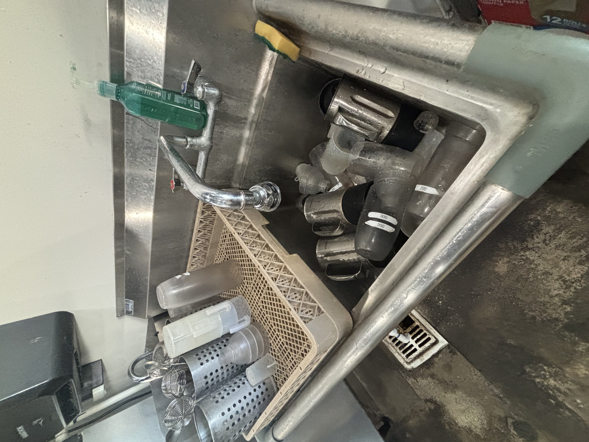

Kathleen Nguyen
Hi, my name is Kathleen Nguyen. I'm 18 years old and currently attending my first year at the University of Riverside. My current major is Psychology. I live on campus with my two roomates Genevy and Natalie. This college experience is everything I imagined. Being a little far away from home makes me homesick, but I decided to attend here and make my family proud! I come home on the weekends to spend time with my family, as well as work at my job. I have 2 sibling, a brother and a sister, and also two cats. Their names are Nova and Meeko. Being up here in Riverside is pretty cool. It is a different environment and it's like I live two different lives. The only thing that bothers me is the weather. It is either really hot or really cold here considering we live in the desert. I am a family person at heart. I've always been close to all my family members and I love spending time with them.
I am a waitress at the restaurant, Burnt Crumbs, located in Irvine. Burnt Crumbs is a brunch place and our operating ours are from 8:30 am to 3:00 pm. The food here is delicious, but a little pricey. Working here has been one of my favorite experiences yet. I'm a hard worker and a fast learner. My job is to take orders, expedite, bring out food, make drinks, etc. I've been working here for almost 2 years. This job is honestly one of the best jobs I've ever had. Here we are treated more than just workers, but like family. Everyone here is kind and caring. Working here has made me learn a lot. It isn't just about the money, but the people I get to interact with everyday are unique and fun in their own way.
Being a waitress isn't as easy as it seems. Some people think all you do is just take orders and deliever them, but that's not all to it. There are times where it gets hectic, orders get messed up, and etc. It is my job to make sure everything is in order to satisfy our customers. If someone has a problem with their food I will do my best to make sure they get what they came here for. Sometimes we deal with impatient and rude customers, but that's just how some people are. As a waitress I always put on a smile and give great service. I am fast and very efficient. Most people quit jobs like waitressing because of the management. Our management here to to make sure our customers are always satisfied. Not only do we satisfy your needs, we make sure you all leave happy and full. We are mainly busy on weekends where the line goes out the door and wraps around the plaza. I recommend trying our food at least once! If you ever want to skip the lines, always feel free to come on the weekdays where the lines aren't that long!
Experience
Photographer
• Develop photos
• Take Pictures
• Experience with Photoshop
Waitress
• Responsible for checking out customers
• Deliver food and drinks
• Pack food for to-go orders
Barista
• Memorized 50+ drinks
• Take orders and give reccomendations
• Make mochi waffles
• Call our orders/names
Education
University of California Riverside
Portfolio
